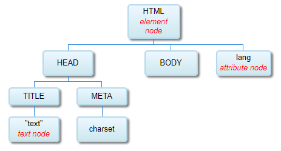

CSS is the language for describing the presentation of Web pages, including colors, layout, and fonts. It allows one to adapt the presentation to different types of devices, such as large screens, small screens, or printers. CSS is independent of HTML and can be used with any XML-based markup language. The separation of HTML from CSS makes it easier to maintain sites, share style sheets across pages, and tailor pages to different environments. This is referred to as the separation of structure (or: content) from presentation.
Learn about selectors: how they work? what is available? when to use each?
Learn about properties: how they work? what is available? when to use each?
Identify and evaluate how each component of the content is to be presented. (Overview of CSS3)
Create each CSS rule, starting with the general, start with the top of DOM, to achieve the desired presentation.
Test, experiment, make observations. Look for improvements.
Follow guidelines, document your code well, and keep your CSS tidy.
Repeat. Commit to 30-45 minutes a day for a month. Always push the boundaries to learn more. Practice to achieve higher level of mastery.
Following guidelines
Organize your code
Resetting browser defaults Each browser has default values that will be applied to elements in the absence of CSS style rule. This can cause inconsistencies in the appeaarance of the page design across different browsers. It is important to reset the browser's default values to ensure that your style sheet has total control of the design.
Modularizing style sheets When styling large websites, it is ueful to make individual sheets for different purposes and then link them in a single mater style sheet.
Describing sections Each style sheet should be separated into sections with commented headings, desribing the purpose of that section. This makes the code easier for others to understand and easier for you to understand when revisiting the code some time later.
Keeping your code consistent List the rule declarations in alphabetical property order to more readily find a declaration. Give preference to including the terminating semi-colon after the final declaration. (although optional, easy to miss later when appending further declarations)
Optimize style rules
Inheriting values It is important to recognize that many property values of a parent element are inherited by the child element it contains. Most commonly the font and color properties are inherited from the containing parent element. If a style rule sets these properties for the parent element a further rule need not repeat them for the child element (unless different values are desired).
Sizing text When specifying text size, it is best practice to avoid absolute unit values in order to allow the user to enlarge text. The preferred method is to size text relative to the browser using em units. Standard browser font size is 1em, which is equal to 16px.
Employing shorthand Always use CSS shorthand properties rather than individual properties to keep style sheet code concise.
Employing multiple classes The HTML element's class attribute can be assigned multiple values, each separated by a space. This is a very powerful feature, allowing you to apply styles from more than one class to any element.
Validate style sheets
Web broswers make no attempt to validate code, so it is important to verify every HTML document and CSS style sheet before the web page is published, even when the page looks fine in your browser. When the browser encounters code errors, it makes a guess at what is intended, but different browsers may make different interpretations and so display the page incorrectly. W3C provides free online validator tools that check web page code for errors and warnings.
As with HTML, you are encouraged to make comments in your CSS, to help you understand how your code works when coming back to it after several months, and to help others coming to the code to work on it understand it.
Comments in CSS begin with /* and end with */. In the below code block I have used comments to mark the start of different distinct code sections. This is useful to help you navigate your codebase as it gets larger — you can search for the comments in your code editor.

Minimal HTML5 document starts with the root element HTML, it has three children: HEAD and BODY are element nodes and LANG is aan attribute node. The HEAD element node has two element node children, TITLE and META. TITLE element node has a single text node child and META element node has a single attribute node child.
CSS3 Syntax
CSS Level 3 delivers a wide range of styles and effects, enhancing a web app without sacrificing semantic structure or performance .
Style Rule (CSS Rule)
selectors { /* declaration start (open brace) */
property:value; /* each ends with a semi-colon */
property:value;
} /* declaration end (close brace) */
Selector specifies the target of styling. Declaration specifies the property and value to be applied to the selector.
Selector Syntax and Structure
A selector represents a particular pattern of element(s) in a tree structure. The term selector can refer to a simple selector, compound selector, complex selector, or selector list. The subject of a selector is any element that selector is defined to be about; that is, any element matching that selector. A list of simple/compound/complex selectors is a comma-separated list of simple, compound, or complex selectors. This is also called just a selector list.
CSS Rules
A CSS document is a series of style rules, which are
qualified rules that apply styles to elements in a document, and
at-rules, which define special processing rules or values for the CSS document.
Qualified rules
A qualified rule starts with a prelude then has a {}-wrapped block containing a sequence of declarations. The meaning of the prelude varies based on the context that the rule appears in—for style rules, it’s a selector which specifies what elements the declarations will apply to. Each declaration has a name, followed by a colon and the declaration value. Declarations are separated by semicolons.
A style rule is a qualified rule that associates a selector list with a list of property declarations. They are also called rule sets in [CSS2]. CSS Cascading and Inheritance [CSS-CASCADE-3] defines how the declarations inside of style rules participate in the cascade.
At-rules
At-rules are all different, but they have a basic structure in common. They start with an "@" symbol, followed by their name as a CSS keyword. Some at-rules are simple statements, with their name followed by more CSS values to specify their behavior, and finally ended by a semicolon. Others are blocks; they can have CSS values following their name, but they end with a {}-wrapped block, similar to a qualified rule. Even the contents of these blocks are specific to the given at-rule: sometimes they contain a sequence of declarations, like a qualified rule; other times, they may contain additional blocks, or at-rules, or other structures altogether.
| @import | @media | @keyframes | @font-face | @charset |
CSS3 Specificity, Inheritance, and the Cascade
Conflicting rules —cascade, specificity, inheritance— these three concepts together control which CSS applies to what element.
The Cascade and Inheritance
One of the fundamental design principles of CSS is cascading, which allows several style sheets to influence the presentation of a document. When different declarations try to set a value for the same element/property combination, the conflicts must somehow be resolved.
The opposite problem arises when no declarations try to set a value for an element/property combination. In this case, a value is found by way of inheritance or by looking at the property’s initial value.
The cascading and defaulting process takes a set of declarations as input, and outputs a specified value for each property on each element.
The Cascade
Specificity
Specificity is a measure of how specific a selector is — how many elements it could match. Element selectors have low specificity. Class selectors have a higher specificity, so will win against element selectors. ID selectors have an even higher specificity, so will win against class selectors. The only way to win against an ID selector is to use !important.
CSS Location
External Style Sheets
<link rel="stylesheet" href="css/style.css">
Scope is web-app wide, can be used on multiple pages.
Scope is the element containing the attribute, cannot be reused, good only for that one element.
Browser
Normal flow (defaults). Each browser sets the properties to default values. Refer to individual vendor's documentation and to W3C specifications; vendor's conform to industry standards, but will have variations. It is important to understand how browser applications construct the DOM and CSSOM to gain insight how CSS rules are applied.
Limit the use of inline style only to temporary usage during development and move to internal styles quickly. You can create a class for the element, replace the style attribute with the class attribute, and move all declarations to the newly-created class.
<!-- Let's say you developed the following
somewhere in the body section of your document-->
<p style="color:yellow;background-color:navy;"> content </p>
<!-- to convert it to internal, add a new class in the style element
inside the head section of the document -->
<style>
.yellow-text {
color: yellow;
background-color: navy;
}
</style>
</head>
<!-- now replace the style attribute with the class attribute -->
<p class="yellow-text"> content </p>
Convert inline styles to internal styles.
Moving from internal to external stylesheets
Using external stylesheets allows you to make all pages look the same and to reduce duplication of the same code from file to file. To move from internal (scope is the document) to external (scope is the web app), follow the guidelines:
Create an empty external file with .css extension.
Cut and paste CSS rules from the <style> element to the newly created file.
You can create multiple files to organize the CSS code.
The CSS file contains only CSS rules.
Include the same header (prologue) in each CSS file as the HTML document, with appropriate adjustements.
Save the new file in the project's css sub-directory.
All external stylesheets have the extension .css.
All external stylesheets are stored in the css sub-directory.
To create the link to the external file, replace the <style> element with <link> element to link in the external style sheets.
Create a link for each CSS file that you want to include.
The order of the links matters when re-defining property values for the same element/property combination.